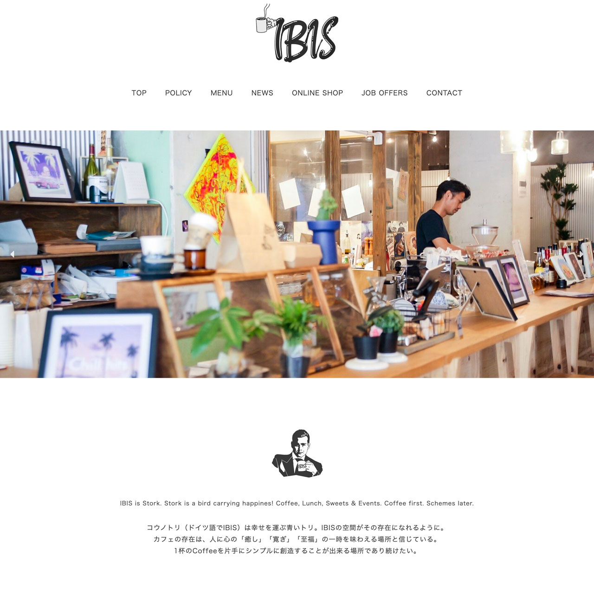
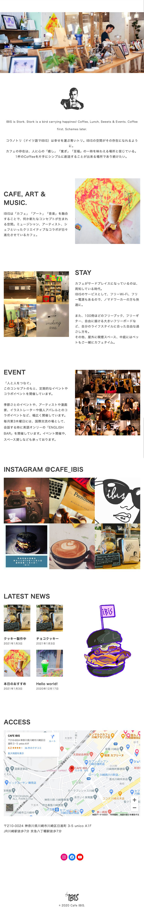

<!DOCTYPE html>
<html lang="ja">
<head>
  <meta charset="UTF-8">
  <meta name="viewport" content="width=device-width, initial-scale=1.0">
  <link rel="preconnect" href="https://fonts.gstatic.com">
  <link href="https://fonts.googleapis.com/css2?family=Cormorant+Infant:ital@0;1&display=swap" rel="stylesheet">
  <meta property="og:site_name" content="エトーシンゴの作品集" />
  <meta property="og:type" content="website" />
  <meta property="og:title" content="SHINGO ETO's PORTFOLIO" />
  <meta property="og:url" content="https://shingoeto.com/" />
  <meta property="og:image" content="https://shingoeto.com/ogp.png" />
  <meta property="og:description" content="エトーシンゴの作品集です。" />
  <meta property="og:email" content="shingoetohh@gmail.com" />
  <meta name="twitter:card" content="summary_large_image" />
  <meta name="twitter:site" content="@et_sng" />
  <title>Works | SHINGO ETO's PORTFOLIO</title>
</head>
<body id="page-works">
  <!-- Drawer -->
  <div id="drawer">
    <a class="hamburger">
      <span class="line top"></span>
      <span class="line center"></span>
      <span class="line bottom"></span>
    </a>
    <nav class="nav">
      <div class="wrap">
        <ul class="menu">
          <li class="item"><a href="#works">Works</a></li>
          <li class="item"><a href="#skills">Skills</a></li>
          <li class="item"><a href="#carrer">Carrer</a></li>
          <li class="item"><a href="#about">About</a></li>
        </ul>
      </div>
    </nav>
  </div>
  <!-- Works -->
  <section id="works">
    <div class="inner">
      <div class="section-title">
        <h2 class="fadein">Works.</h2>
        <p class="fadein">This is my anthology. mainly, web design and video creating.</p>
        <p class="fadein">私の作品集。主にウェブデザイン、動画編集の作品など。</p>
      </div>
      <div id="app">
        <div class="work-tmb-wrap">
          <!-- Work 1 -->
          
          <!-- Work 2 -->
          
          <!-- Work 3 -->
          
          <!-- Work 4 -->
          
          <!-- Work 6 -->
          
          <!-- Work 7 -->
          
          <!-- Work 8 -->
          
          <!-- Work 9 -->
          
        </div>
        <!--  Work 1 Contents -->
        <div class="modal-container">
          <div ref="work1" class="work-contents" v-scroll-lock="open">
            <h4 class="work-title-wrap">
              <span class="work-modal-title text-en">My Portfolio</span><br>
              <span class="work-modal-link"><a href="https://shingoeto.com/" rel="noopenner" target="_blank">shingoeto.com</a></span>
            </h4>
            <div class="work-modal-image">
              <a href="https://shingoeto.com/" rel="noopenner" target="_blank">
                
              </a>
            </div>
            <p class="work-scope">
              web design / direction: shingo eto
              <br>photos: sherry / shingo eto
            </p>
            <p class="work-about">
              転職用のポートフォリオサイトを作成しました。
              デザイン面では余白を意識し、
              シンプルで見やすい、web、動画、写真など、様々な作品で使えるようなポートフォリオサイトをイメージしました。
              メインヴィジュアルは印象をつけるためインパクトのある画像をチョイスし、
              フォントに関しては、英字は「Cormorant Garamond」、日本語は「游ゴシック」を使用しました。
              「Cormorant Garamond」イタリックでもノーマルでも馴染みが良い感じがし、このフォントに。
              「游ゴシック」は文字感覚を空けたいと思った時に一番馴染みが良いと感じ設定しました。
              works. セクションはVue.jsを用いてモーダルウィンドウを採用しました。
            </p>
            <div class="work-captures">
              <div class="work-capture-tab">
                
              </div>
              <div class="work-capture-sp">
                
              </div>
            </div>
          </div>
        </div>
        <!--  Work 2 Contents -->
        <div class="modal-container">
          <div ref="work2" class="work-contents" v-scroll-lock="open">
            <h4 class="work-title-wrap">
              <span class="work-modal-title text-en">Chikyu Tankentai</span><br>
              <span class="work-modal-link"><a href="https://expl.co.jp/" rel="noopenner" target="_blank">expl.co.jp</a></span>
            </h4>
            <div class="work-modal-image">
              <a href="https://expl.co.jp/" rel="noopenner" target="_blank">
                
              </a>
            </div>
            <p class="work-scope">
              web design / direction: shingo eto
              <br>photos: manabu
              <br>html / scss / parcel / prettier
              <br> eslint / htmllint / stylelint / editor config
            </p>
            <p class="work-about">デザインからコーディングまで担当。ターゲットは10代〜50代と広め。中年の方にも見やすいシンプルなデザイン、そして若者が惹かれるキャッチーな文章も写真を使用し、「旅したいな」と思っていただき、幅広く愛着をもたれるようなwebサイトをイメージしました。どこか柔らかさを感じる配色をイメージし、行間も少し開けることでどこかやさしさも伝わるように意識しました。デザイン面では、メインヴィジュアルの星空でインパクト、「隊長って誰？」「ミラタビとは？」セクションの背景に写真を使用し、全体的に艶のある質感を意識しました。</p>
            <div class="work-captures">
              <div class="work-capture-tab">
                
              </div>
              <div class="work-capture-sp">
                
              </div>
            </div>
          </div>
        </div>
        <!--  Work 3 Contents -->
        <div class="modal-container">
          <div ref="work3" class="work-contents" v-scroll-lock="open">
            <h4 class="work-title-wrap">
              <span class="work-modal-title text-en">Cafe IBIS</span><br>
              <span class="work-modal-link"><a href="https://ibiscafe.com/" rel="noopenner" target="_blank">ibiscafe.com</a></span>
            </h4>
            <div class="work-modal-image">
              <a href="https://ibiscafe.com/" rel="noopenner" target="_blank">
                
              </a>
            </div>
            <p class="work-scope">
              web design: shingo eto
              <br>wordpress / cocoon / scss
            </p>
            <p class="work-about">
              スタッフとしてもゲストとしてもお世話になっているカフェのwebサイトを
              WordPressテーマ「Cocoon」を使用し、レイアウト・デザインをしました。
              全体のイメージは「シンプルさ」「洗練さ」。
              写真素材が洗練されているイメージのものが多く、
              強調させすぎるとカフェの印象と遠くなってしまう
              （ギャラリー？ポップアップストア？のように困惑しそう）と思い、
              第一にカフェであることがユーザーが理解できるよう、
              かつ洗練さを求めた文章の調整や配置などを考えて構成しました。
              外国人のお客様も多く、海外のサイトをイメージしつつ日本人のユーザーも
              見やすいようなイメージをしました。
            </p>
            <div class="work-captures">
              <div class="work-capture-tab">
                
              </div>
              <div class="work-capture-sp">
                
              </div>
            </div>
          </div>
        </div>
        <!--  Work 4 Contents -->
        <div class="modal-container">
          <div ref="work4" class="work-contents" v-scroll-lock="open">
            <h4 class="work-title-wrap">
              <span class="work-modal-title text-en">Thailand - Wonderful Land</span>
            </h4>
            <div class="work-video">
              <iframe title="Thailand - Wonderful Land" src="https://www.youtube.com/embed/hURqN2SRsYc" frameborder="0" allow="accelerometer; autoplay; clipboard-write; encrypted-media; gyroscope; picture-in-picture" allowfullscreen></iframe>
            </div>
            <p class="work-scope">
              clips / edit: shingo eto
            </p>
            <p class="work-about">
              2020年2月、タイに旅をした時のVlogです。
              疾走感のあるVlogをイメージしましたが、
              次々と来るクリップ一つ一つの存在感が薄れないように意識し作成しました。
              バックパックで旅をしていたので、カメラが持ちきれなく、iPhone Xで撮影したクリップしかなく、
              かつ旅に夢中になっていたので、質の良いクリップは撮れませんでしたが、それなりになるようEditしました...。
              東南アジアの雑多な街、海、寺院などに馴染むようなカラーグレーディングを意識しました。タイ、愛しています。
            </p>
          </div>
        </div>

        <!--  Work 5 Contents -->
        <div class="modal-container">
          <div ref="work5" class="work-contents" v-scroll-lock="open">
            <div class="work-title-wrap">
              <h4>
                <span class="work-modal-title">Miratabi</span><br>
                <span class="work-modal-link"><a href="https://miratabi.net/" rel="noopenner" target="_blank">miratabi.net</a></span>
              </h4>
            </div>
            <div class="work-modal-image">
              <a href="https://miratabi.net/" rel="noopenner" target="_blank">
                
              </a>
            </div>
            <div class="work-scope">
              client: miratabi
              <br>design: shingo eto
            </div>
            <p class="work-about">
              WordPressテーマ「Snow Monkey」を使用し、テンプレートからデザイン、
              画像の編集等を担当しました。ターゲットの年齢層は30代〜60代と幅広め。
              シンプルさを意識し、クリアなイメージで作成しました。
              素材写真が、配色は、広大な青空と草原がイメージできるような配色にしました。
            </p>
            <div class="work-captures">
              <div class="work-capture-tab">
                
              </div>
              <div class="work-capture-sp">
                
              </div>
            </div>
          </div>
        </div>
        <!--  Work 6 Contents -->
        <div class="modal-container">
          <div ref="work6" class="work-contents" v-scroll-lock="open">
            <h4 class="work-title-wrap">
              <span class="work-modal-title text-en">Hazuki Kondo - AW Collection 2018</span>
            </h4>
            <div class="work-video">
              <iframe title="Thailand - Wonderful Land" src="https://www.youtube.com/embed/ZYADtvekNFc" frameborder="0" allow="accelerometer; autoplay; clipboard-write; encrypted-media; gyroscope; picture-in-picture" allowfullscreen></iframe>
            </div>
            <p class="work-scope">
              edit: shingo eto
              <br>hair & make: hazuki kondo
            </p>
            <p class="work-about">
              美容師時代、定期的に行う撮影会で、個人的に動画の撮影をさせていただき、
              編集まで行いました。撮影音をそのまま使用したりし、
              雰囲気などをより感じ取れるよう、
              ラフに仕上げました。秋冬ということもあり、
              乾き始めた空気に少し冷たい風が吹いているようなカラーグレーティングにしました。
            </p>
          </div>
        </div>
      </div>
      <!--  Work 7 Contents -->
      <div class="modal-container">
        <div ref="work7" class="work-contents" v-scroll-lock="open">
          <h4 class="work-title-wrap">
            <span class="work-modal-title text-en">USA - Short Vlog</span>
          </h4>
          <div class="work-video">
            <iframe title="USA - Short Vlog" src="https://www.youtube.com/embed/9Wv-a-m0G7U" frameborder="0" allow="accelerometer; autoplay; clipboard-write; encrypted-media; gyroscope; picture-in-picture" allowfullscreen></iframe>
          </div>
          <p class="work-scope">
            clips / edit: shingo eto
          </p>
          <p class="work-about">
            撮影と編集をしました。2017年の夏にアメリカ西海岸へ一人旅に行きました。
            初めての海外でした。いい動画たくさん撮ってやる！と意気込んだものの、
            撮影する間も忘れるような素晴らしい旅となりました。
            Trek Americaという多国籍ツアー（13人で1週間かけてバンでロードトリップするツアー）にも参加し、
            日本人、アジア人も僕一人で、唯一のノンイングリッシュスピーカーでした。
            残念すぎるカメラワークに、無理やり編集でそれっぽく仕上げましたが、アメリカ西海岸の広大な景色や街は、
            それをもカバーしてくれる素晴らしいものでした。そして、素晴らしい経験となりました。
          </p>
        </div>
      </div>
      <!--  Work 8 Contents -->
      <div class="modal-container">
        <div ref="work8" class="work-contents" v-scroll-lock="open">
          <h4 class="work-title-wrap">
            <span class="work-modal-title text-en">USA - Trek America</span>
          </h4>
          <div class="work-video">
            <iframe title="USA - Trek America" src="https://www.youtube.com/embed/YCgTpZswS9o" frameborder="0" allow="accelerometer; autoplay; clipboard-write; encrypted-media; gyroscope; picture-in-picture" allowfullscreen></iframe>
          </div>
          <p class="work-scope">
            clips / edit: shingo eto
          </p>
          <p class="work-about">
            撮影と編集をしました。2017年の夏、初海外としてアメリカ一人旅に行くと決意し、
            2週間をアメリカ西海岸で過ごしました。Trek Americaという多国籍ツアー
            （13人で1週間かけてバンでロードトリップするツアー）に参加し、
            仲間と共に素敵な時間を過ごしました。肌で感じるカルチャー、
            壮大な自然、東京では見れない星空、ド派手な街、デカすぎるハンバーガー、
            日本から出たことのない僕には全てが新鮮でした。
            そして何よりもアジア人の僕に親切にしてくれたメンバー。とても大切な思い出です。
          </p>
        </div>
      </div>
      <!-- Modal Window -->
      <open-modal v-if="showModal != null" :img-info="showModal" @from-child="closeModal">
        <template v-slot:img="slotProps">
            <div v-html="slotProps.imgInfo.modal"></div>
          </template>
        </open-modal>
      </div>
    </div>
  </section>
  <!-- Footer -->
  <footer id="footer">
    <div class="inner">
      <div class="footer">
        <p class="footer-copyright text-en">© 2020 Shingo Eto.</p>
        <ul class="footer-menu text-en">
          <li><a href="#works">WORKS</a></li>
          <li><a href="#skills">SKILLS</a></li>
          <li><a href="#about">ABOUT</a></li>
        </ul>
      </div>
    </div>
  </footer>
  <script src="https://ajax.googleapis.com/ajax/libs/jquery/3.5.1/jquery.min.js"></script>
  <script src="https://cdnjs.cloudflare.com/ajax/libs/smooth-scroll/16.1.0/smooth-scroll.min.js"></script>
  <script src="https://cdn.jsdelivr.net/npm/vue/dist/vue.js"></script>
  <script src="script/app.js"></script>
  <script src="script/main.js"></script>
</body>
</html>
